RP ProPulse – Simulation der Ausbreitung ultrakurzer Pulse
| Start | Anwendung | Modell | Versionen | Benutzung | Beispiele |
Ein flexibles Werkzeug für die Simulation der Pulsausbreitung
RP ProPulse ist ein mächtiges Werkzeug zur Simulation der Propagation ultrakurzer Laserpulse in verschiedenen Situationen, insbesondere
- in den Resonatoren aktiv oder passiv modengekoppelter Laser
- in synchron gepumpten parametrischen Oszillatoren
- in optischen Fasern (für die jedoch RP Fiber Power die bessere Wahl sein könnte)
Benutzerlizenzen für die aktuelle Version 2 sind verfügbar für kommerzielle und nicht-kommerzielle Kunden.
Scripting gibt maximale Flexibilität – und ist einfach!
In RP ProPulse können Sie eine Resonatorstruktur in Textform definieren, d. h. in einem Script. Beispielsweise kann ein passiv modengekoppelter Laser wie folgt defininiert werden:
Die Simulation beginnt immer mit einem “Startpulse”, der ebenfalls schnell definiert ist:
Danach können Sie einfach instruktive Plots erhalten, z. B. um die Entwicklung der Pulse zu sehen:
Aber Sie brauchen nicht immer Code, um Pulse zu inspizieren; Sie können auch ein interaktives Tool dafür verwenden:
Auch alle anderen Arten von Aufgaben lassen sich leicht mit ein paar Zeilen Skriptcode lösen:
- Lassen Sie die Software automatisch so viele Umläufe des Pulses im Resonator durchführen, bis sich Pulsparameter nicht mehr wesentlich ändern.
- Senden Sie den erzeugten Puls durch weitere optische Komponenten, z. B. eine nichtlineare Faser und einen dispersive Kompressor.
- Erzeugen Sie diverse Diagramme, um Eigenschaften von Pulse oder was auch immer zu illustrieren.
- Speichern Sie beliebige berechnete Daten in Textdateien oder binären Dateien – praktisch jedes beliebige Dateiformat kann erzeugt werden.
(Siehe auch unsere Fallstudien als konkrete Beispiele, und schauen Sie sich die praktische Benutzeroberfläche an.)
Die Produkt-Beschreibung
Die folgende Broschüre gibt Ihnen einen Überblick über die Software:
- 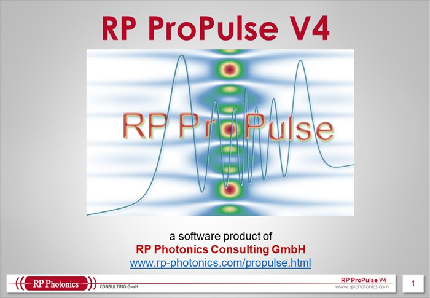
- 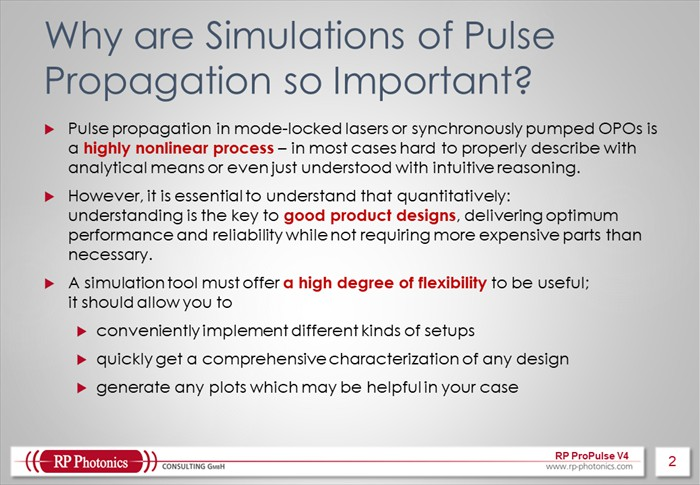
- 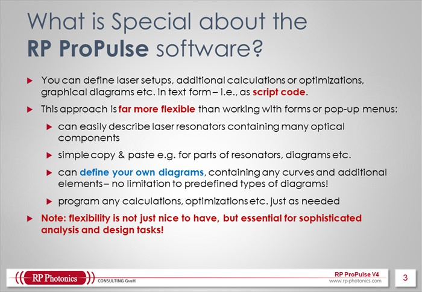
- 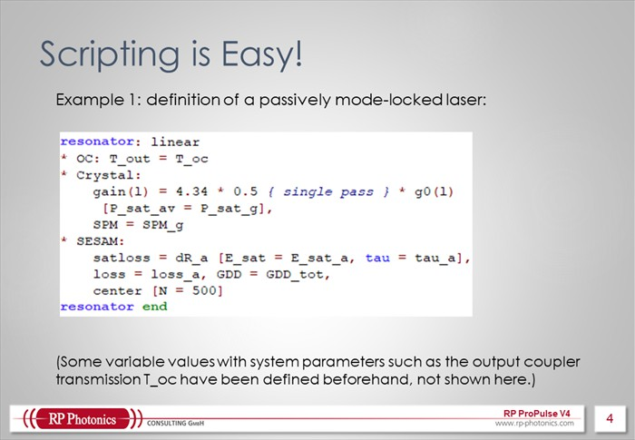
- 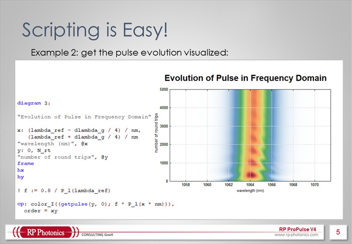
- 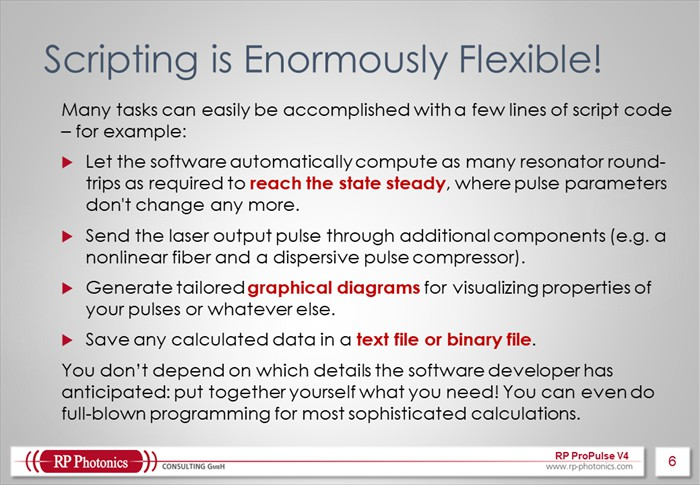
- 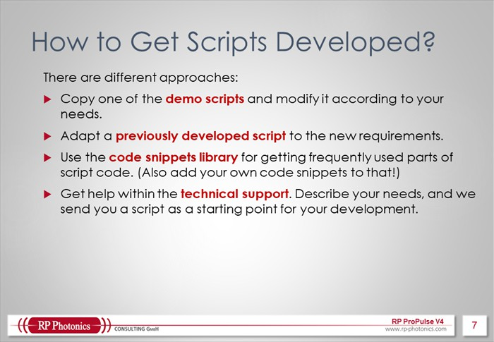
- 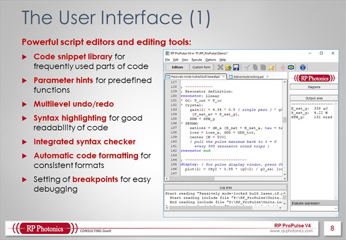
- 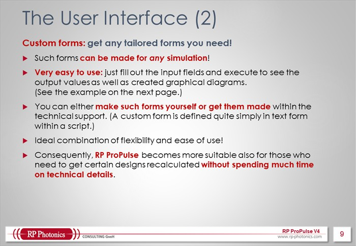
- 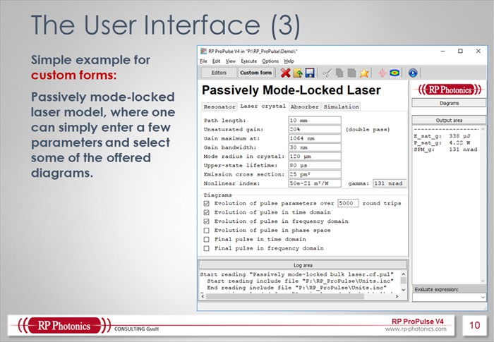
- 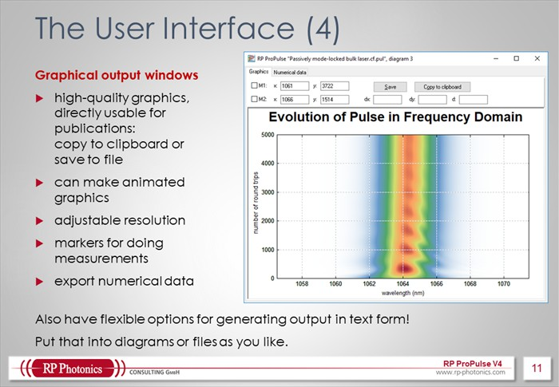
- 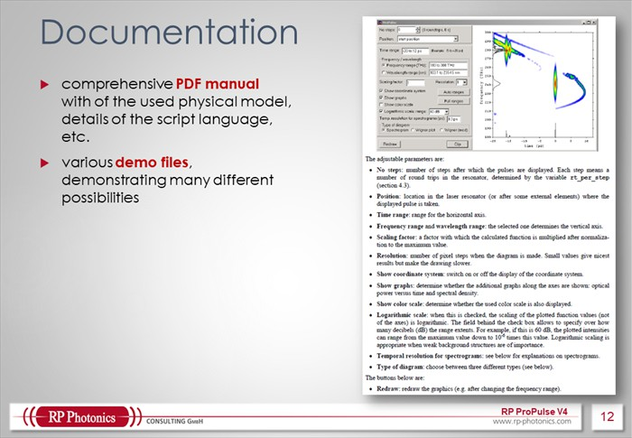
- 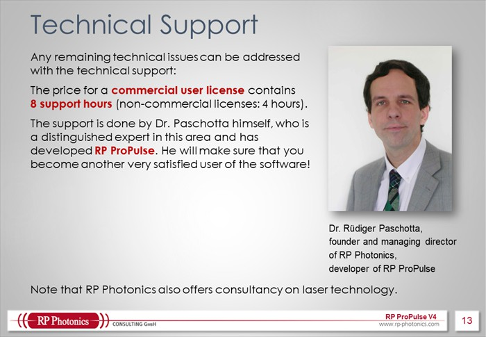
- 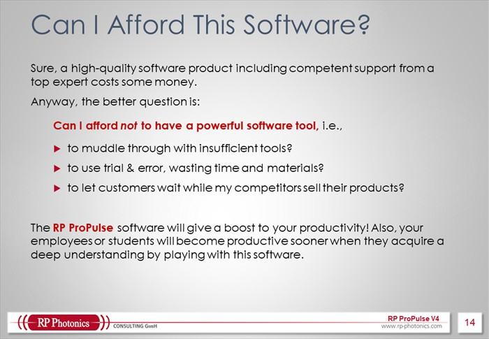
- 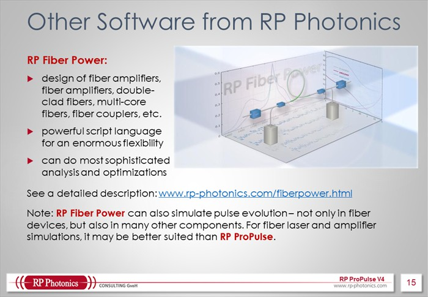
- 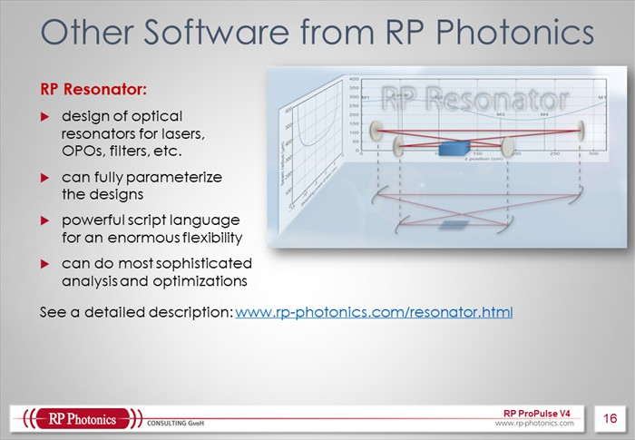
- 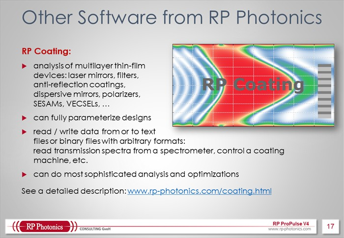
Sie können die Seiten blättern, indem Sie auf der linken oder rechten Seite klicken.
Sie können auch unsere Broschüre im PDF-Format herunterladen.
Die wichtigsten Merkmale der Software:
- RP ProPulse kann eine große Anzahl von Effekten berücksichtigen, die Pulse bei der Ausbreitung modifizieren: wellenlängenabhängige lineare Verluste, sättigbare Verluste (in schnellen oder langsamen sättigbaren Absorbern), Zweiphotonenabsorption, Amplituden- oder Phasenmodulation in einem Modulator mit beliebiger Ansteuerung, Laserverstärkung (mit verschiedenen Sättigungs-Charakteristika), parametrische Verstärkung, Frequenzverdopplung, chromatische Dispersion beliebiger Ordnungen, Selbstphasenmodulation, Ramanstreuung, self-steepening, Vierwellenmischung, Quantenrauscheffekte (z. B. spontane Emission in Verstärkern) sowie dispersive Kompression (mit automatischer Optimierung).
- Das Programm benutzt ausgefeilte Algorithmen für die Pulspropagation in Fasern, einschließlich der symmetrisierten Split-Step-Methode und der Pseudospektral-Methode. Eine automatische Schrittweitensteuerung ist ebenfalls möglich. Die Berechnungen erfolgen sehr schnell. (Beachten Sie, dass die Ausbreitung ultrakurzer Pulse in Faserverstärkern ebenfalls in der aktuellen Version von RP Fiber Power simuliert werden kann.)
- Es gibt einfache und flexible Optionen für die Definition z. B. der optischen Komponenten in einem Laserresonator. Dies erlaubt z. B. schnell den Einfluss der Reihenfolge verschiedener Komponenten zu testen.
- Es gibt ebenfalls flexible Optionen für detaillierte Spezifikationen, z. B. den Import von Dispersionsprofilen optischer Komponenten oder Daten der Pulse, mit denen die Simulationen beginnen, aus Dateien.
- Die interaktive Bedieneroberfläche erlaubt alle Arten von Pulseigenschaften anzuzeigen für verschiedene Positionen im Laserresonator und eine einstellbare Anzahl von Umläufen im Resonator. Ebenfalls kann man auf interaktive Weise Spektrogramme und Wigner-Plots anzeigen.
- Die leistungsfähige Skriptsprache gibt der Software ein außerordentliches Maß an Flexibilität. Beispielsweise kann man damit praktisch beliebige Arten von Plots erzeugen, um die berechneten Ergebnisse in einer klaren Weise zu visualisieren. Ebenfalls kann man beispielsweise Daten auf flexible Weise exportieren oder statistische Auswertungen erzeugen.
Durch diese Eigenschaften kann die Software in einem weiten Bereich von Fällen angewandt werden. Einige Beispiele werden als Demos gezeigt. Sie werden kaum eine andere Software finden, die solche Simulation mit einer vergleichbaren Flexibilität ausführen kann.
Ein weiterer wichtiger Aspekt: Sie können leicht verifizieren, dass der Entwickler dieser Software ein bestens ausgewiesener Experte ist, der die dafür relevante Physik genau versteht und die Literatur dazu kennt. Er wird persönlich dafür sorgen, dass jedes Problem, welches Sie im Umgang mit der Software haben mögen, umgehend gelöst wird. Substanzieller technischer Support – auch verwendbar für Beratung zu nicht software-spezifischen Problemen – ist in der Lizenzgebühr enthalten.
Wenn Sie noch Fragen haben oder ein Angebot benötigen: